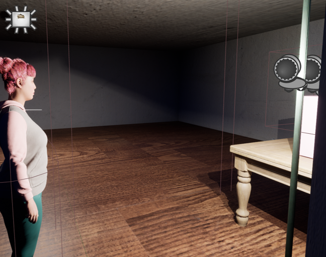

Project | 2024
Synthesizer
UE5 RPG / Social Simulation Prototype
一项在 CMAC 755S 课程中独立完成的 UE5 角色扮演与社会模拟原型，围绕少女偶像角色、城市生活系统和政治与社会张力展开。
A solo UE5 role-playing and social-simulation prototype developed for CMAC 755S, centered on girl-idol characters, urban life systems, and political and social tensions.
Overview | 项目简介
Synthesizer 使用 UE5 的 MP City 环境构建可探索的城市原型。玩家在少女偶像角色与城市居民之间移动，通过对话、资源管理和环境互动接触角色关系以及更广泛的政治与社会议题。
Synthesizer uses UE5's MP City environment to build an explorable urban prototype. The player moves among girl-idol characters and city residents, encountering character relationships and broader political and social questions through dialogue, resource management, and environmental interaction.
Process | 过程
项目通过 GDD 和关卡设计文档定义世界、角色与玩法，再以饥饿值、货币系统和自动售货机教程建立早期玩家循环，并接入 ConvAI NPC 测试更开放的角色对话。阶段汇报和最终文档记录了原型在机制、关卡与叙事表达之间的迭代。
The project defines its world, characters, and mechanics through a GDD and level-design documentation. Hunger, currency, and a vending-machine tutorial establish the early player loop, while ConvAI NPCs test more open-ended character dialogue. Milestone presentations and final documentation record iteration across mechanics, level design, and narrative expression.
Media | 图像与成果

